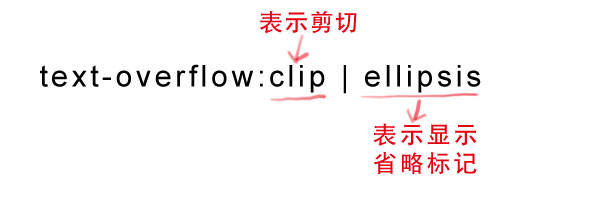

但是text-overflow只是用来说明文字溢出时用什么方式显示，要实现溢出时产 生省略号的效果，还须定义强制文本在一行内显示（white-space:nowrap）及 溢出内容为隐藏（overflow:hidden），只有这样才能实现溢出文本显示省略号 的效果，代码如下：
text-overflow:ellipsis;
overflow:hidden;
white-space:nowrap;
同时，word-wrap也可以用来设置文本行为，当前行超过指定容器的边界时是否断开转行。
语法：

normal为浏览器默认值，break-word设置在长单词或 URL地址内部进行换行，此 属性不常用，用浏览器默认值即可。